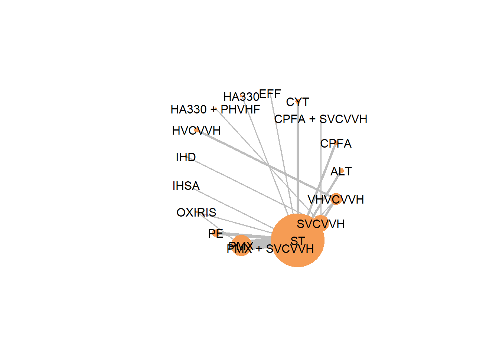
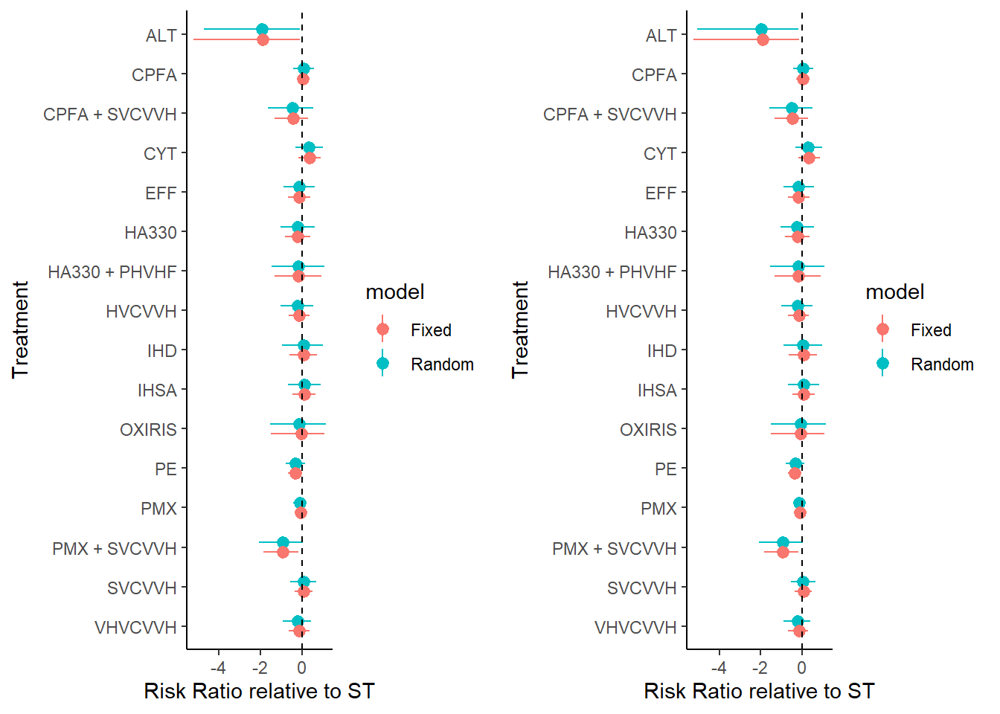
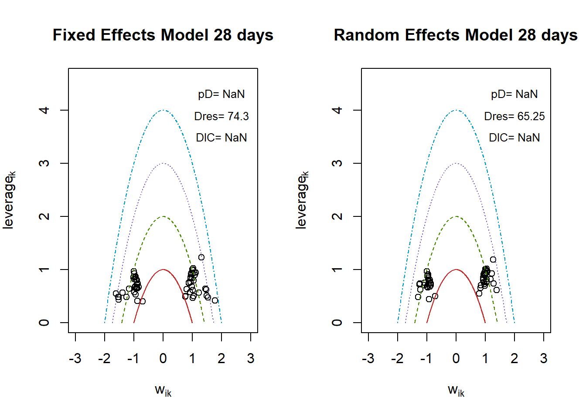
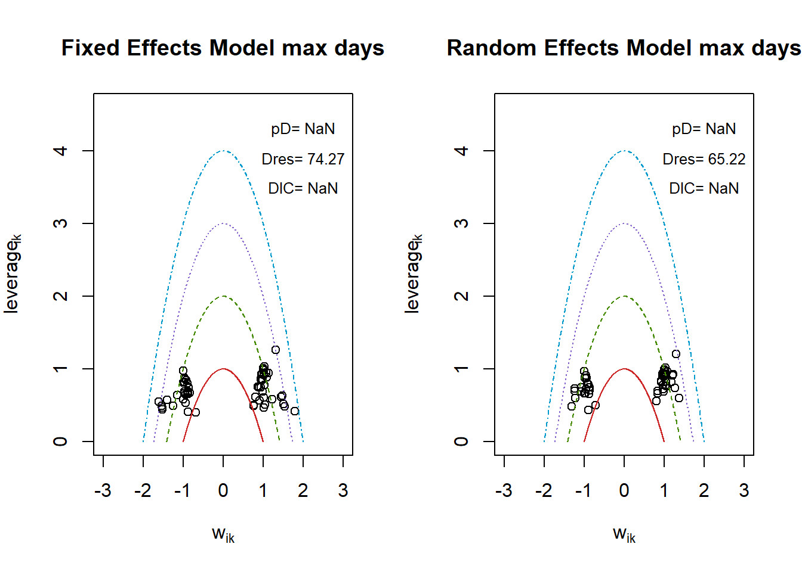

if (!require("pacman")) install.packages("pacman")
library(pacman)
pacman::p_load('BUGSnet', 'dplyr', 'tidyr', 'stringr', 'ggplot2', 'cowplot', 'googlesheets4')
set.seed(12345)
gs4_deauth()
data_raw <- read_sheet('14aXdaoIlexEhEPIVylDPF3HLr28ChyRIYGMEqWnDI0A',
sheet = 'Sheet2',col_types = "c",skip = 1) |>
mutate(across(contains('n_'), as.numeric)) |>
filter(analyzed_population == 'Per-Protocol' | (study == 'Dellinger 2018' & analyzed_population == '> 9 MODS primary analyses'))Reproducing a network_metaanalysis from Meco 2026 (DOI: 10.1016/j.jcrc.2025.155330)
1 Часть 1
data_raw |> select(study,group_code, contains('events')) |>
group_by(study) |>
slice(1) |> ungroup() |>
summarise(across(starts_with("n_events"), ~ sum(!is.na(.)))) |>
pivot_longer(
cols = everything(),
names_to = "endpoint",
values_to = "n_studies"
)# A tibble: 6 × 2
endpoint n_studies
<chr> <int>
1 n_events_28-30 26
2 n_events_60 7
3 n_events_90 8
4 n_events_ICU 5
5 n_events_hospt 4
6 n_events_unspecified 5data_raw |>
group_by(study) |>
summarise(
across(starts_with("n_events"), ~ any(!is.na(.)))
) |>
rowwise() |>
mutate(n_endpoints = sum(c_across(starts_with("n_events")))) |>
ungroup() |> select(study, n_endpoints)# A tibble: 31 × 2
study n_endpoints
<chr> <int>
1 Boussekey 2008 2
2 Busund 2001 1
3 Chu 2020 1
4 Coudroy 2017 1
5 Cruz 2009 2
6 Dellinger 2018 3
7 Gimenez-Esparza 2019 2
8 Hassan 2013 1
9 Hawchar 2019 1
10 Huang 2010 3
# ℹ 21 more rowsevent_cols <- grep('n_events', colnames(data_raw), value = T)
study_endpoints <- data_raw |>
group_by(study) |>
summarise(
across(event_cols, ~ first(.)),
.groups = "drop"
) |>
rowwise() |>
mutate(
nearest_28_name = if (!is.na(`n_events_28-30`)) {
"28-30"
} else {
# which.min возвращает индекс минимального значения в векторе
col_index <- which.min(c_across(all_of(event_cols)))
sub("n_events_", "", event_cols[col_index])
},
nearest_hospt_name = if (!is.na(n_events_hospt)) {
"hospt"
} else {
col_index <- which.max(c_across(all_of(event_cols)))
sub("n_events_", "", event_cols[col_index])
},
) |>
ungroup() |> select(study, contains('nearest'))
data_with_endpoints <- left_join(data_raw,study_endpoints, by = 'study')
date_28 <- data_with_endpoints |>
rowwise() |>
mutate(
nearest_28_events = get(paste0("n_events_", nearest_28_name)),
nearest_28_at_risk = get(paste0("n_at_risk_", nearest_28_name))
) |>
ungroup() |>
select(study, group_code, n_events = nearest_28_events, n_patients = nearest_28_at_risk)
max_date <- data_with_endpoints |>
rowwise() |>
mutate(
nearest_hospt_events = get(paste0("n_events_", nearest_hospt_name)),
nearest_hospt_at_risk = get(paste0("n_at_risk_", nearest_hospt_name))
) |>
ungroup() |>
select(study, group_code, n_events = nearest_hospt_events, n_patients = nearest_hospt_at_risk)prep_template <- \(df){
date_28 |>
select(study, starts_with(c("group_code", "n_events", "n_patients"))) |>
rename(
Treatment = group_code,
r = n_events,
n = n_patients,
Study = study
) |>
filter(Treatment != '') |>
select(Study, Treatment, r, n)
}
data_prepared_max <- prep_template(max_date)
data_prepared_28 <- prep_template(date_28)# Prepare network data object for analysis
network_template <- \(dat){
data.prep(
arm.data = dat,
varname.t = "Treatment",
varname.s = "Study"
)
}
network_data_max <- network_template(data_prepared_max)
network_data_28 <- network_template(data_prepared_28)plot_network <- \(network, title){
cat("##", title, "\n")
net.plot(
network,
node.scale = 3,
edge.scale = 1.5
)
}
# петлями обозначены сравнения исследований с более чем 2 группами
plot_network(network_data_max, "Max follow-up")## Max follow-up 
plot_network(network_data_28, "28 days")## 28 days 
network_char_max <- net.tab(
data = network_data_max,
outcome = "r",
N = "n",
type.outcome = "binomial"
)
network_char_28 <- net.tab(
data = network_data_28,
outcome = "r",
N = "n",
type.outcome = "binomial"
)
print(network_char_max$network)# A tibble: 12 × 2
Characteristic Value
<chr> <chr>
1 Number of Interventions 17
2 Number of Studies 31
3 Total Number of Patients in Network 2703
4 Total Possible Pairwise Comparisons 136
5 Total Number of Pairwise Comparisons With Direct Data 18
6 Is the network connected? TRUE
7 Number of Two-arm Studies 30
8 Number of Multi-Arms Studies 1
9 Total Number of Events in Network 1154
10 Number of Studies With No Zero Events 30
11 Number of Studies With At Least One Zero Event 1
12 Number of Studies with All Zero Events 0 print(network_char_max$intervention)# A tibble: 17 × 7
Treatment n.studies n.events n.patients min.outcome max.outcome av.outcome
<chr> <int> <int> <int> <dbl> <dbl> <dbl>
1 ALT 2 1 15 0 0.143 0.0667
2 CPFA 2 48 110 0.407 0.579 0.436
3 CPFA + SVCV… 1 5 11 0.455 0.455 0.455
4 CYT 2 22 57 0.362 0.5 0.386
5 EFF 1 18 38 0.474 0.474 0.474
6 HA330 1 11 24 0.458 0.458 0.458
7 HA330 + PHV… 1 4 15 0.267 0.267 0.267
8 HVCVVH 2 150 246 0.583 0.645 0.610
9 IHD 1 7 10 0.7 0.7 0.7
10 IHSA 1 19 67 0.284 0.284 0.284
11 OXIRIS 1 3 10 0.3 0.3 0.3
12 PE 3 34 88 0.333 0.571 0.386
13 PMX 9 182 502 0.2 0.586 0.363
14 PMX + SVCVVH 1 6 24 0.25 0.25 0.25
15 ST 23 358 947 0.18 0.9 0.378
16 SVCVVH 7 102 189 0.4 0.833 0.540
17 VHVCVVH 5 184 350 0.207 0.657 0.526 print(network_char_max$comparison)# A tibble: 18 × 5
comparison n.studies n.patients n.outcomes proportion
<chr> <int> <int> <int> <dbl>
1 ALT vs. ST 2 30 5 0.167
2 CPFA + SVCVVH vs. SVCVVH 1 23 15 0.652
3 CPFA vs. ST 2 233 100 0.429
4 CYT vs. ST 2 117 36 0.308
5 EFF vs. ST 1 58 29 0.5
6 HA330 + PHVHF vs. SVCVVH 1 30 10 0.333
7 HA330 vs. ST 1 44 22 0.5
8 HVCVVH vs. VHVCVVH 2 492 300 0.610
9 IHD vs. SVCVVH 1 30 21 0.7
10 IHSA vs. ST 1 143 38 0.266
11 OXIRIS vs. PMX 1 20 6 0.3
12 OXIRIS vs. ST 1 20 5 0.25
13 PE vs. ST 3 176 82 0.466
14 PMX + SVCVVH vs. SVCVVH 1 48 24 0.5
15 PMX vs. ST 9 977 354 0.362
16 ST vs. SVCVVH 1 76 37 0.487
17 ST vs. VHVCVVH 1 60 16 0.267
18 SVCVVH vs. VHVCVVH 2 156 62 0.397print(network_char_28$network)# A tibble: 12 × 2
Characteristic Value
<chr> <chr>
1 Number of Interventions 17
2 Number of Studies 31
3 Total Number of Patients in Network 2703
4 Total Possible Pairwise Comparisons 136
5 Total Number of Pairwise Comparisons With Direct Data 18
6 Is the network connected? TRUE
7 Number of Two-arm Studies 30
8 Number of Multi-Arms Studies 1
9 Total Number of Events in Network 1154
10 Number of Studies With No Zero Events 30
11 Number of Studies With At Least One Zero Event 1
12 Number of Studies with All Zero Events 0 print(network_char_28$intervention)# A tibble: 17 × 7
Treatment n.studies n.events n.patients min.outcome max.outcome av.outcome
<chr> <int> <int> <int> <dbl> <dbl> <dbl>
1 ALT 2 1 15 0 0.143 0.0667
2 CPFA 2 48 110 0.407 0.579 0.436
3 CPFA + SVCV… 1 5 11 0.455 0.455 0.455
4 CYT 2 22 57 0.362 0.5 0.386
5 EFF 1 18 38 0.474 0.474 0.474
6 HA330 1 11 24 0.458 0.458 0.458
7 HA330 + PHV… 1 4 15 0.267 0.267 0.267
8 HVCVVH 2 150 246 0.583 0.645 0.610
9 IHD 1 7 10 0.7 0.7 0.7
10 IHSA 1 19 67 0.284 0.284 0.284
11 OXIRIS 1 3 10 0.3 0.3 0.3
12 PE 3 34 88 0.333 0.571 0.386
13 PMX 9 182 502 0.2 0.586 0.363
14 PMX + SVCVVH 1 6 24 0.25 0.25 0.25
15 ST 23 358 947 0.18 0.9 0.378
16 SVCVVH 7 102 189 0.4 0.833 0.540
17 VHVCVVH 5 184 350 0.207 0.657 0.526 print(network_char_28$comparison)# A tibble: 18 × 5
comparison n.studies n.patients n.outcomes proportion
<chr> <int> <int> <int> <dbl>
1 ALT vs. ST 2 30 5 0.167
2 CPFA + SVCVVH vs. SVCVVH 1 23 15 0.652
3 CPFA vs. ST 2 233 100 0.429
4 CYT vs. ST 2 117 36 0.308
5 EFF vs. ST 1 58 29 0.5
6 HA330 + PHVHF vs. SVCVVH 1 30 10 0.333
7 HA330 vs. ST 1 44 22 0.5
8 HVCVVH vs. VHVCVVH 2 492 300 0.610
9 IHD vs. SVCVVH 1 30 21 0.7
10 IHSA vs. ST 1 143 38 0.266
11 OXIRIS vs. PMX 1 20 6 0.3
12 OXIRIS vs. ST 1 20 5 0.25
13 PE vs. ST 3 176 82 0.466
14 PMX + SVCVVH vs. SVCVVH 1 48 24 0.5
15 PMX vs. ST 9 977 354 0.362
16 ST vs. SVCVVH 1 76 37 0.487
17 ST vs. VHVCVVH 1 60 16 0.267
18 SVCVVH vs. VHVCVVH 2 156 62 0.397# Standard therapy was used as the benchmark treatment.
reference_treatment <- "ST"
model_template <- \(network, effects){
nma.model(
data = network,
outcome = "r",
N = "n",
reference = reference_treatment,
family = "binomial",
link = "log",
effects = effects,
prior.mu = "dnorm(0, 0.0001)",
prior.d = "dnorm(0, 0.0001)",
prior.sigma = "dunif(0, 5)"
)
}
nma_model_random_28 <- model_template(network_data_28, "random")
nma_model_fixed_28 <- model_template(network_data_28, "fixed")
nma_model_random_max <- model_template(network_data_max, "random")
nma_model_fixed_max <- model_template(network_data_max, "fixed")# Running model
run_template <- \(model){
nma.run(
model,
n.burnin = 5000,
n.iter = 20000,
thin = 1
)
}
nma_results_random_28 <- run_template(nma_model_random_28)Compiling model graph
Resolving undeclared variables
Allocating nodes
Graph information:
Observed stochastic nodes: 63
Unobserved stochastic nodes: 80
Total graph size: 1381
Initializing modelnma_results_fixed_28 <- run_template(nma_model_fixed_28)Compiling model graph
Resolving undeclared variables
Allocating nodes
Graph information:
Observed stochastic nodes: 63
Unobserved stochastic nodes: 47
Total graph size: 1296
Initializing modelnma_results_random_max <- run_template(nma_model_random_max)Compiling model graph
Resolving undeclared variables
Allocating nodes
Graph information:
Observed stochastic nodes: 63
Unobserved stochastic nodes: 80
Total graph size: 1381
Initializing modelnma_results_fixed_max <- run_template(nma_model_fixed_max)Compiling model graph
Resolving undeclared variables
Allocating nodes
Graph information:
Observed stochastic nodes: 63
Unobserved stochastic nodes: 47
Total graph size: 1296
Initializing modelextract_template <- \(res, model_label){
do.call(rbind, res$samples) |>
as_tibble() |>
mutate(iter = row_number()) |>
select(iter, matches("^d\\[")) |>
pivot_longer(-iter,
names_to = "d_index",
values_to = "value") |>
mutate(
trt = res$trt.key[
as.integer(stringr::str_extract(d_index, "\\d+"))
]
) |>
group_by(iter) |>
mutate(value = value - value[trt == reference_treatment]) |>
ungroup() |>
filter(trt != reference_treatment) |>
summarise(
mean = median(value),
lci = quantile(value, .025),
uci = quantile(value, .975),
.by = trt
) |>
mutate(model = model_label)
}
forest_df_28 <- bind_rows(
extract_template(nma_results_random_28, "Random"),
extract_template(nma_results_fixed_28, "Fixed")
)
forest_df_max <- bind_rows(
extract_template(nma_results_random_max, "Random"),
extract_template(nma_results_fixed_max, "Fixed")
)
plot_template <- \(df){
df |>
mutate(
trt = factor(trt, levels = unique(trt)),
trt = forcats::fct_rev(trt)
) |>
ggplot(
aes(trt, mean, ymin = lci, ymax = uci, colour = model)
) +
geom_pointrange(position = position_dodge(.5)) +
geom_hline(yintercept = 0, linetype = 2) +
coord_flip() +
labs(x = 'Treatment',
y = 'Risk Ratio relative to ST')+
theme_classic()
}
g1 <- plot_template(forest_df_28)
g2 <- plot_template(forest_df_max)
cowplot::plot_grid(g1, g2)
par(mfrow = c(1, 2))
# Leverage plots for model diagnostics
fe_fit <- nma.fit(
nma_results_fixed_28,
main = "Fixed Effects Model 28 days"
)
re_fit <- nma.fit(
nma_results_random_28,
main = "Random Effects Model 28 days"
)
par(mfrow = c(1, 1)) par(mfrow = c(1, 2))
# Leverage plots for model diagnostics
fe_fit <- nma.fit(
nma_results_fixed_max,
main = "Fixed Effects Model max days"
)
re_fit <- nma.fit(
nma_results_random_max,
main = "Random Effects Model max days"
)
par(mfrow = c(1, 1))